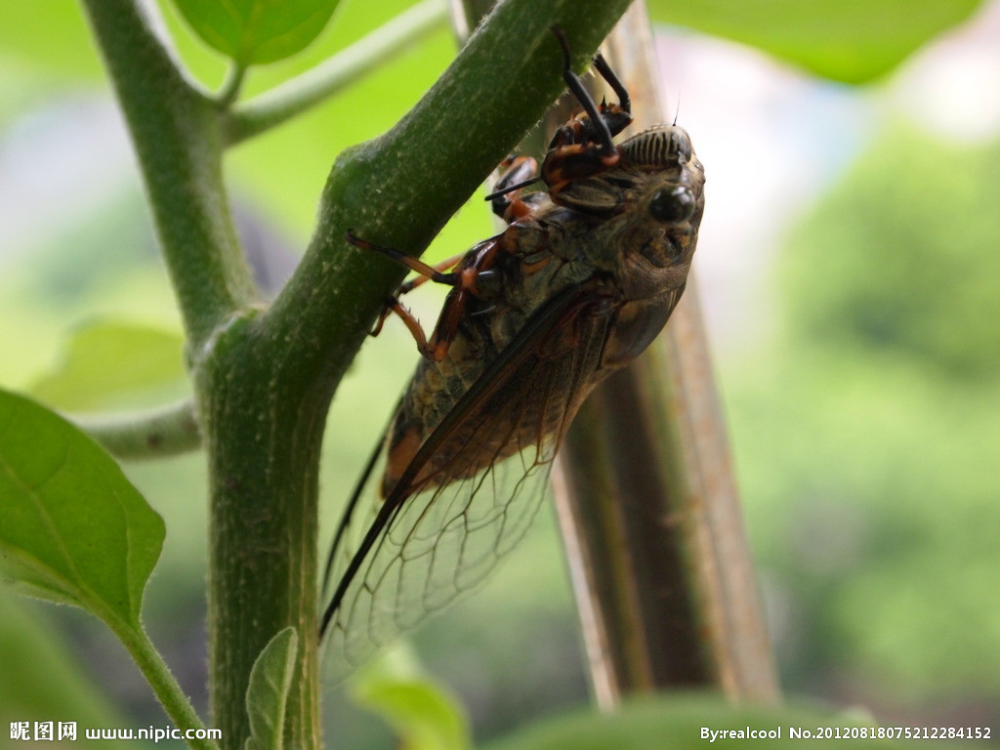
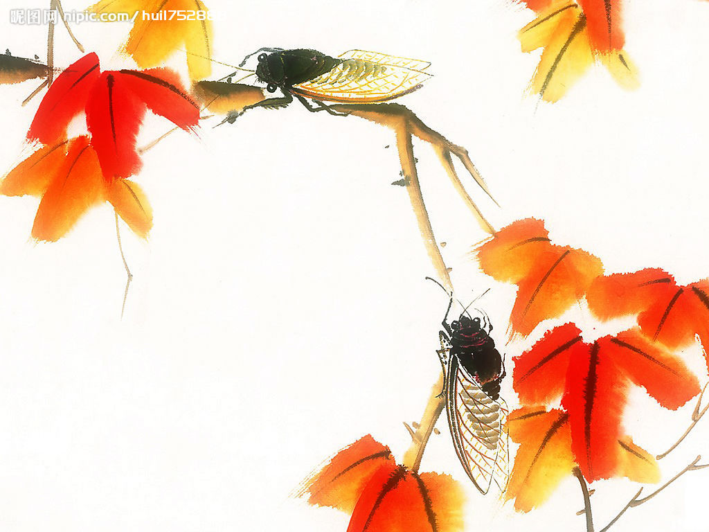

寓言故事一：蝉的仕途
据说，天帝缔造大地和人类时，也用泥巴捏了许许多多昆虫鸟兽，并且赋予生命。这些东西，跑的跑，跳的跳，爬的爬，飞的飞，无奇不有，难以管理。遂命狮为兽王，凤为鸟王，蝉为昆虫之王。还规定，王的责任是帮助它的百姓解决实际问题。
谁知，好逸恶劳的蝉，谋其位而不谋其政，整天躲在树荫下寻欢作乐。有一天，蝼蛄飞来向它汇报：“尊敬的王上，我们的住房被水淹了……”蝼蛄还没说完，蝉王就唱起了：“知了——，知了——!”蝼蛄以为大王已经晓得，不宜多讲，告退走了。第二天，蜻蜓又来汇报：“尊敬的王上，我们已经断粮了，有的饿得难熬已在啃自己的屁股。”蝉王在圆形的树杆上移了移几乎是方形的身子，心不在焉地唱着：“知了——，知了——!”蜻蜓以为大王早已了解民情，粮食很快就会得到解决，欢欢喜喜地回去了。第三天，纺织娘哭哭啼啼地也来了：“大王，螳螂吃掉我一个孩子。”蝉不以为然地直起喉咙唱：“知了——，知了——!”善良的纺织娘以为螳螂很快会受到应有的惩罚，怀着感激的心情离开了蝉王。
过了几天，蝼蛄遭的水灾越来越严重;抵抗不住饥饿的蜻蜒死了一批，幸存者仍然瘪着肚子;为非作歹的螳螂象是自由王国的天使，而纺织娘的孩子却一个接一个地丧生。蝼蛄、蜻蜓、纺织娘忍无可忍了，便相约同往，请求大王解决实际问题。蝉王在树上老远看到他们来了，起劲地高喊：“知了一一，知了一一!”
三位受难者，面面相觑，心中都明白：蝉王 是不会帮助解决问题的，再拖下去只有死路一条。蝼蛄提议：“二位，我们不如冒昧向天帝禀报，或许会有一线生机。”蜻蜓和纺织娘觉得蝼蛄兄说的办法好，于是一齐行动。
是不会帮助解决问题的，再拖下去只有死路一条。蝼蛄提议：“二位，我们不如冒昧向天帝禀报，或许会有一线生机。”蜻蜓和纺织娘觉得蝼蛄兄说的办法好，于是一齐行动。
天帝听了禀报，遂即降旨，召来了蝉王，问：“他们的危难你晓不晓得?”蝉唱：“知了——，知了一一l”又问：“知道了又为什么不解决?”蝉王仍答：“知了，知了。”天帝急了，喝问：“到底解不解决?”蝉王还是“知了，知了”地唱着。天帝雷鸣电闪地发了一通脾气：“光知道，而不帮解决，等于不知道。占着茅厕不拉屎，你永远唱你的‘知了’歌去吧!”
从此，蝉又成了令人讨厌的小昆虫。
寓言故事二：老鼠卖字
山羊丢了一罐奶，兔子丢了一袋黄豆。他俩决心追查到底。
偷了这两样东西的老鼠非常恐慌。他眼珠子一转，想出了一个鬼主意，跑到山羊和兔子跟前来装蒜：“您两位丢了东西，我也怪心疼的。我从人类那里得到一本关于破获各类盗窃案的书。根据书上提供的经验，什么复杂的案子都是可以破获的。您两位不想读读这本书吗?”
山羊说：“这可太好了。我是最相信书上的话了。”
兔子说：“书是人类智慧的结晶。快把书本拿来我看!”
老鼠回到洞里，经过一番精心安排，拿出两叠经他嗑过的字纸;一叠给了山羊，一叠给了兔子。
山羊把字纸摆开来一看，这一行字是：“兔子偷了山羊的奶。”
兔子把字纸摆开来一看，这一行字是：“黄豆是山羊窃去的。”
山羊和兔子都认为自己捉住了盗窃犯，扭住对方，在地上滚打起来。打完了，他们才明白：被老鼠咀嚼过的文字，是相信不得的。
寓言故事三：黄牛与跳蚤
黄牛邀请跳蚤一起外出旅游。
黄牛说：“听说桂林山水很优美，咱俩一起去玩一玩，你有兴趣吗?”
跳蚤说：“去一趟可以。但我听说‘桂林山水甲天’了，可不知那里长不长青草?”
黄牛说：“那有什么关系?咱们去看风景，又不是去割草。”
跑蚤说：“你真够笨的!如果没有草，你难道要到那里去吃‘山水’吗?没有东西吃，风景有什么用呢?”
黄牛觉得跳蚤说得对，想了一想，又建议道：
“那我们就先到草原上去，观光花草树木，看看羚羊骆驼，顺便再积攒些草料，然后再南下桂林。”
跳蚤说：“好主意。不过，到那儿以后，你先不要忙于攒什么草料，最鼋要的是先把自己养得膘肥体壮……”
黄牛感谢跳蚤的好意，便一起出发了。
走着走着，黄牛感到身上发痒，原来是被跳蚤叮了一口。
黄牛问：“跳蚤，你，这是干什么?”
跳蚤说：“我想化验一下你血液里的营养成分，看看吃点什么草才对你的育肥有利。” 黄牛说：“为什么你事先不征求我的同意呢?”
跳蚤说：“我千这种事情的时候，是从来也不征求谁的意见的。”
黄牛说!“哼!原来你关心的是喝血!”
跳蚤说：“不，我也关心你的身板。鲜美的血液和肥膘是有很大关系的。”
黄牛向发痒的地方伸出了带刺的舌头。看来那位吸血的旅伴大概情形不妙……
寓言故事四：傻狍子充师傅
小白兔带着一篮子瓜果梨桃去请梅花鹿教他学长跑。半路上遇见了狍子。狍子很想得到小白兔的礼物，就说：“老弟，我劝你不要去找梅花鹿。他浑身白点，屁股上还有一撮白毛，非常显眼，容易被猎人打中。你还是跟我学吧。我跟梅花鹿一样能跑，但绝没有梅花鹿的毛病。”
小白兔眨巴着眼睛笑着说：“好哥哥，你是黄的，我是白的，如果咱俩跑在一起，我会变得非常显眼，那我不就要挨打了吗?”狍子两眼发呆，回不上话来。小白兔笑嘻嘻地找梅花鹿去了。
过了几天，梅花鹿果然被猎人打中了。小白兔哭了起来。狍子跑过来对他说：“瞧，猎人的子弹是从鹿屁股长白毛的地方打进去的，你快不要哭了，让我来教你学长跑吧。”
小自兔擦了擦眼泪，决定向狍子学长跑。他抬头一瞧，噗哧笑了，说;“狍子哥!你的屁股也是白的呢!”
“胡说!”狍子回过头来，瞪着眼睛。
“真的l”小白兔说，“原来你和梅花鹿一样，都是白屁股!”
狍子犟嘴：“猎人从来没有打中我，我怎么可能是白屁股?”他急于想得到那一篮子礼物，就说：“小白兔，你要是长跑，就快来，‘预备’——”
“乓——”狍子被猎人打倒了。
猎人走来了，小白兔慌忙逃跑。他一边跑一边想：“无怪人家叫他傻狍子，他太无自知之明了。”
寓言故事五：含羞草
含羞草种在·一只精致的花盆里，主人将它放在客厅里。因为它经常自我陶醉，洋洋自得，所以人们都叫它得意草。
它为什么要如此得意呢?因为它觉得自己的叶子颜色翠绿，是世界上最美的。
因为它觉得自己的神态婀娜多姿，是世界上最俊的。
因为它觉得自己的花朵颜色淡雅，是世界上最好看的。
主人觉得得意草太自鸣得意了。有一年春天，主人将它放到门前的庭园里去。庭园里有一株盛开的月季，得意草和月季花一比，觉得自己的花和叶子太寒伧了。
夏天来了，主人将得意草放到池塘边去。池塘里的荷花正在怒放。得意草和荷花一比，无论叶子还是花朵，都没有荷花那样美丽雅致。
秋天来了，主人将得意草放到菊花丛中去。得意草的花朵和千姿百态、色彩斑斓的菊花一比，它觉得自己太不象样了。
冬天来了，大雪飞飞扬扬，主人将得意草放到红梅树旁边去。得意草和不畏严寒的红梅相比，它羞愧得再也抬不起头来了。
第二年，主人将得意草重新放到客厅里去的时候，它再也不洋洋自得了。
主人碰了一下得意草说：“得意草，你现在还自鸣得意吗?”
得意草羞愧地将叶子收拢，弯下了身子，摇了摇头说：“不，跟别的花草相比，我实在太惭愧了。”
从此，人们一碰得意草，它就羞愧地收拢叶子，低下头来。不知从哪一天起，人们不再叫它得意草，而叫它含羞草了。
人们赞赏它的自谦精神，更加喜欢将它放在客厅里，供人赏玩。
寓言故事六：火炉的秘密
墙角边一只被冷落了多年的香炉，因无人理睬，情绪很不好，常常埋怨自己的命运不佳。过去受人朝拜，如今落得与锈钉烂铁、破鞋烂袜为伍。它诅咒现代人不通人情，指着人们的 背影暗暗斥责：“还不主动供起我来烧香?”
冬天，火炉的四周总是围满了人，谁都愿意往火炉身边靠，有时能里外坐下儿层人。香炉见了高兴得差点叫了起来，“有了，有了，有主意了。请火炉帮忙!”
夜深人散之后，香炉移动着三条短腿，来到火炉跟前，“火炉老兄，你真幸运啊l”
“啊，是你呀，香炉老弟。”火炉琢磨了一下香炉的话，问：“难道你有什么不愉快的事吗?”
“唉……!香炉长叹了一口气，“我被扔到墙脚边多少年了，不仅孩子们Hq不上我的名字，该死的大人们，也把我忘到九霄云外去了。我寂寞极了。”
“这好办。”火炉热心地安慰着香炉：“每天都有许多人到我这里来，你不嫌吵，也经常到人群中来玩玩，就不寂寞了。”
“不管怎么讲，我还是上帝的神物嘛。要我主动走到人群中去?”香炉几乎用的是辩驳的口气。
“那怎么办?”火炉无可奈何地问。
“将围在你身边的人，每天动员几个到我那里去，你肯帮忙吗?”
“这，哎呀，我无能为力。”
“怎么啦?”
“人心所向，不是我能动员更改的。”
“那你为什么能拉拢这么多人跟你在一块?请把你的秘诀告诉我吧!”
火炉没有想到香炉会提出这个要求，诧异了：“我确实没有什么秘诀。”
“不要保守嘛，我是专程来求教的。”香炉缠住火炉不放。
火炉受了委屈似的说：“我唯一的做法，是努力给予人们温暖。”
寓言故事七：老虎头上的苍蝇
有一只苍蝇，整天嗡嗡地到处乱飞。不管它飞到哪里，大家都十分厌恶它，追打它l对此，苍蝇怀恨在心，但自己又极无能，所以很是苦恼。
一天，一只老虎吃饱睡着了。苍蝇壮大了胆子飞过去，饱餐一顿老虎的残羹剩食后，索性飞到老虎的头上。它发现许多动物见了睡虎，都蹑手蹑脚远远地绕过去，心里很是高兴。待老虎醒来时，它装出一副无限虔诚的样子，趴在老虎的耳边说：“尊敬的百兽之王，您走起路来山呼海啸，您大吼一声地动山摇!您是这无边森林的主宰，这里的一切都归于您l”老虎听了这番话很得意，觉得这只小苍蝇很可爱，于是说：“你这个小东西挺会说话的，就留下来跟我唠嗑，解解闷吧。”
就这样，苍蝇变成了老虎的参谋和宠儿。从此，谁也不敢再惹它了。因为它不再是一只普通的苍蝇，而是一只老虎头上的苍蝇了!
寓言故事八：狐狸和兔子
有一只凶残而又狡猾的狐狸，专门欺压残害弱小动物。
有一天，狐狸捉到一只正在寻找食物的母兔。当它张开血盆大口的时候，兔子苦苦地哀求说：“仁慈的狐狸先生，请您发发慈悲，看在我三个幼小的无依无靠的孩子份上，不要伤害我吧!”狡猾的狐狸一听母兔还有三个孩子，立即将它放了，并装出一副十分怜悯而又慈悲的笑脸，关切地安慰它说：“啊，原来是这样!您咋不早说呢。我不伤害您，您赶快回家去照管孩子去吧l”可怜的母兔无限感激;连声道谢后，赶回家去。
狡猾的狐狸远远跟踪在后边。它来到兔子的家门口，见门紧紧地关着，就侧耳听起屋里的动静。这时，从门缝传出兔妈妈柔和而又感激的声音：“亲爱的孩子们l今天，我被狐狸先生逮住了。我说，请您看在我三个小宝宝的份上，放我回家吧l狐狸先生十分仁慈，它可怜你们这些小生命，不但没伤害我，还催我快点回家照管你们呢!”三只小灰兔听了，连声感激和称赞说：“狐狸先生真好啊!”狐狸听到这里，心里喜滋滋的，推门就往里闯!不曾想，它头大门小。头被门框撞了个大青疱l狐狸十分恼火，正要发脾气。这是，兔妈妈听见有人敲门，就问：“谁啊?”狡猾的狐狸听见兔妈妈柔和的问话后，立即镇静下来，用一种十分关切的口吻说：“我呀，我来探望你可爱的小宝宝来了!”兔妈妈很是高兴，连声说：“啊，是仁慈的狐狸先生啊!快请进!快请进!”狐狸一边揉着卤门上的大青疱，一边急得无可奈何地说：“亲爱的兔妈妈l我的心地是世界上最最善良的!这一点您已经领教过了。我本想立即就来到您的身旁，看看您那天真可爱的小宝宝，可是我的个子太大，您家的门太小，我进不去呀!您还是快把小宝宝领出来，让我好好地瞧瞧吧!”兔妈妈急忙给孩子们整理衣服，一边连声回答.
“好，好!请您稍微等一等，我们马上就出来!”很快，兔妈妈领着三只天真活泼的小灰兔，亲亲热热地蹦出来了。就在它们离开大门的一刹那，凶残而又狡猾的狐狸往门口一坐，厉声说道：“对不起，我原先放走你们一只，目的是为了得到你们四只!你们这些头脑简单、只配做鱼肉的小傻瓜，早就该是我的口中食了!”说着，向兔妈妈和三只天真无辜的小灰兔扑过去。兔妈妈在它即将断气的时候，无限懊悔地说：“我真是活该，谁叫我这样轻信狡猾而又凶残的狐狸的鬼话呢!”
寓言故事九：麻雀的评论
麻雀唧唧喳喳，遇事爱发表评论，有什么法儿7它历来如此。
这天，麻雀看见地面冒出了一个嫩绿的小点儿，把附近的泥土都拱了起来，便好奇地飞近问道：“你是什么?”
“竹笋。”一个细弱的声音应道：“我想冒出来……”
“冒出来?唧喳喳。”麻雀笑得前仰后合：“你有多大能耐，我屙一兜屎就可以盖上你!识趣点，乖乖儿地躺着吧!”
麻雀飞到一株桃树枝丫上，见一只蜜蜂“嗡嗡”地在花间飞动，还从花蕊里钻进钻出。
“咦，这是干什么?”
“我想采集花蜜，和大伙酿成一缸子蜜糖……”
“喳喳，唧!小鸭子想生大鹅蛋哩!”麻雀边叫边笑：“这肯定是灯草搭桥白费劲儿，有眼前烂漫的春光，你何不趁机逛一逛，乐～乐，而去干这等蠢事儿?”
它评论一番以后，又快快活活地飞走了。飞着飞着，快靠近屋檐边的时候，猛地见一个灰团儿从鸽子笼边掉了下去。“怎么回事，怎么回事?”麻雀扑下去急问。“我想飞上蓝天，”一只羽毛没长满的小鸽子回答：“哎，没想到……”“唧，喳喳，唧唧唧!”麻雀的喉咙里顿时滚出了一阵大笑：“傻小子，慢慢地走着玩好了，喳喳，想飞上蓝天，幸亏没有把屁股摔成两瓣儿，快死了这条心吧!”
日子一天天过去了。有一天，麻雀又经过这一带。它见到了什么?——一根新竹挺立着指向天空;一只灰鸽在白云间翻飞;还有，在蜂巢边摆着一缸才取出的蜂蜜，那只小蜜蜂飞在缸边甜甜地笑呢!
“唧喳喳，这难道是事实?”麻雀睁着圆溜溜的小眼睛嚷道：“你们莫不是在玩什么魔术，用来戏弄我这老实巴交的麻雀吧?”
寓言故事十：骏马拉磨
有一匹马，据说已经不顶用，被主人闲置着。有一次，一个威武的骑士偶然发现了这匹马，便禁不住啧喷连声地赞道：“多好的骏马啊，让它跟我上战场，准能……”
“是的，当然是一匹出色的马，”主人高声打断道，“其实，我早就看出来了，而且，，明天，我就要让它充分发挥作用。”
骑士听完主人的表白，只好恋恋不舍地离开。骏马听了他们的对话，顿时全身热血沸腾，它仿佛觉得自己在纵情奔驰，驮着勇敢的骑手快似流星，冲锋陷阵……
激动的一夜终于过去了。第二天一早，主人果然找到了骏马，他一直把马牵进了磨房，给它戴上了眼罩，而且十分得意地说：“好马儿，你总算能大显身手了。哈哈，谁说我不是‘伯乐’，不会识别和使用这等宝马呢!”
骏马哭笑不得，它只好按主人的安排，终日拉着石磨转。
有这么一种人，他明明在浪费人材，却大言不惭地以“伯乐”自居，说是他也能识别“千里马”，且使用得恰到好处哩!
寓言故事十一：水火无情
从前，有一个人一听见“水火无情”四个字，就非常害怕。一天，他的一个朋友因家中失火被烧死了。他知道后，觉得“火”这东西实在太可怕了，于是决定自即日起，彻底与火断绝关系：不用柴火、不起灶火、不点灯火。肚子饿了，就买点熟食吃，要么就吃生的，这一来，他生活艰苦得无法说。可是，想不到没过几天，他的一个亲戚又被水淹死了。他知道后，觉得“水”这东西太危险了，又断然决定自即日起，与水断绝关系：不喝水、不用水、不看水，甚至连天上下雨也吓得要命，连用水煮的饭也不敢吃了。于是，他整天躺在床上，不几天就把自己活活折磨死了。
其实，任何事物都是有利有弊的。如果光看到事物弊病的一面，畏缩不前，那就什么事情也别想干了。
寓言故事十二：一条好蛇
一条心地很好的蛇抓到一只麻雀，想要把她一口吞掉，于心又不忍。于是把她盘得紧紧的，谆谆善诱地，劝她服从命运，还劝她拿出牺牲精神来献身于他。讲完之后，才客客气气要动手吞吃，并且说：
“你看，我不象别的蛇那样不讲理，我和他们是毫无共同之点的。”
寓意：讽刺那些口头说自己如何如何高尚，如何如何出污泥而不染，实际上却还是与别的执行者一样冷酷无情。
寓言故事十三：懒汉养猪
懒汉的妻子说，养猪比买猪肉划算。因此，她买了一头小猪养在家里。
懒汉想用猪肉下酒，而小猪却生长得很慢。他耐不住性子，便与小猪商量道：“小猪啊，我正缺下酒菜，可又不忍心宰了你，是不是先向你借一只耳朵用用，这样既能保住你的性命，又能使我解解馋，真是两全其美啊!”
小猪一听急了：“先生，猪和人一样，也应该有耳朵的，怎么能借呢?”
“唉，我活了几十年，才那么小小一对耳朵。你才几个月，要那么大的耳朵干什么?先割下一只吧!”懒汉边说边动手，疼得小猪“噫噫呜呜”直叫唤。
过了几天，懒汉又找小猪商量：“小猪啊，你的耳朵左右不对称，很不雅观，另-—只耳朵还是割下来吧，这样好看多了!”
小猪说：“先生，我知道您又缺下酒菜了，既然您看中我惟一剩下的这只耳朵，我有什么法子呢!”于是，懒汉又动手了。
又过了几天，懒汉再来找小猪商量：“小猪啊，你最通情达理，知道我又缺下酒菜啦，这回请你再忍痛割爱，把猪尾巴给我下酒吧!”
小猪说：“这可使不得，没有尾巴怎么过日子啊?”
“你瞧瞧，我们人类早就不要尾巴了，没有尾巴日子过得才舒坦呢!”懒汉容不得小猪辩解，早就把它的尾巴割下来了。
再过了几天，懒汉又到猪圈来，盯着小猪横看看竖看看。小猪说：“先生，不用看了，我再也没有多余的东西可以给您下酒了。”
懒汉说：“不，人类只有两只脚，你却有四个蹄子，看来看去，多了两只前蹄。”
小猪很生气地说：“先生，您不是也有两只前蹄吗?”
懒汉说：“胡说，我有一双手，怎么会是两只前蹄啊?”
懒汉的妻子忍无可忍地骂道：“怎么不是两只前蹄啊?你一只蹄子端酒杯，一只蹄子夹酒菜，除此之外，什么事都不会干，还能算是手吗?”
更多故事请访问作文网